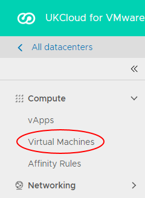
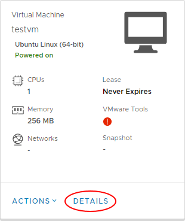

How to use VM location in vCloud Director
Overview
The VM location function in vCloud Director enables you to identify where a specific virtual machine (VM) within your organisation is located within the UKCloud platform.
This article describes the step-by-step instructions for obtaining this information which is available for VMs in both the Assured OFFICIAL and Elevated OFFICIAL security domains.
With regards to the supplied location, this is standardised to the following options:
Corsham (located in the Corsham data centre)
Farnborough (located in the Farnborough data centre)
ENHANCED-Corsham (replicated in both data centres; active in Corsham and standby in Farnborough)
ENHANCED-Farnborough (replicated in both data centres; active in Farnborough and standby in Corsham)
This feature is designed to show the location of VMs to assist you in optimising your infrastructure with regard to performance and availability. If you want to change the location of a specific or group of VMs, raise a support request from the My Calls section of the UKCloud Portal.
You can also use the vCloud API.
Obtaining the location of a VM
In the vCloud Director Virtual Datacenters dashboard, select the VDC your VM is in.
For more detailed instructions on accessing vCloud Director, see the Getting Started Guide for UKCloud for VMware.
In the left navigation panel, select Virtual Machines.

Tip
You can change the view from cards to list. If you need to search for the VM, click on the filter icon and enter the name of the VM.

In the card for the VM, click Details.

Expand the Advanced section of the VM details to see Metadata information at the bottom.
The location of the VM is displayed in the Value column for the SkyscapeLocation metadata tag.
Obtaining the location of a specific VM using the vCloud API
You can also obtain the location of a VM via the via the API, looking at the metadata against the applicable VM.
The following has been created as an example script to obtain the VM location:
https://api.vcd.portal.ukcloud.com/api/vApp/vm-xxxxxxxx/metadata
Replace the "xxxxxxxx" with the relevant VM ID.
Feedback
If you find an issue with this article, click Improve this Doc to suggest a change. If you have an idea for how we could improve any of our services, visit the Ideas section of the UKCloud Community.